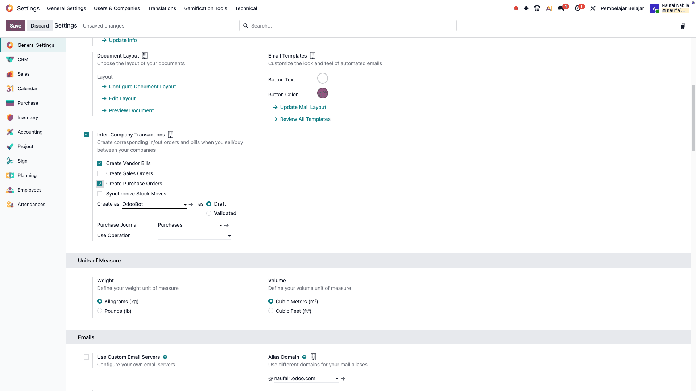

Agar Pembelajar Belajar bisa otomatis mengirim dokumen ke Minji Dimsum, kita harus mengaktifkan aturannya.
Prasyarat: Pastikan modul
Purchase dan
Accounting/Invoicing sudah terinstal.
- Masuk sebagai Administrator. Buka Settings > General Settings.
- Cari bagian Inter-Company Transactions.
- Centang kotak Inter-Company Transactions.
- Klik SAVE terlebih dahulu (tombol ungu di kiri atas) agar opsi muncul.
-
Setelah reload, centang opsi:
- Create Purchase Orders
- Create Vendor Bills
- Klik Save kembali.
💡 Pahami Logika Penamaan Odoo
Mungkin kita bingung, kenapa namanya "Create Vendor Bills" dan bukan "Create Invoice"? Odoo menamai pengaturan berdasarkan HASIL (Output) yang dibuat sistem.
- Logika: Saat Pembelajar Belajar buat Invoice (Pemicu) → Sistem otomatis membuat Tagihan Vendor (Hasil) di Minji Dimsum.
- Maka namanya: Create Vendor Bills.

📸 Screenshot: Settings Inter-Company (Pastikan sudah Save agar opsi muncul)